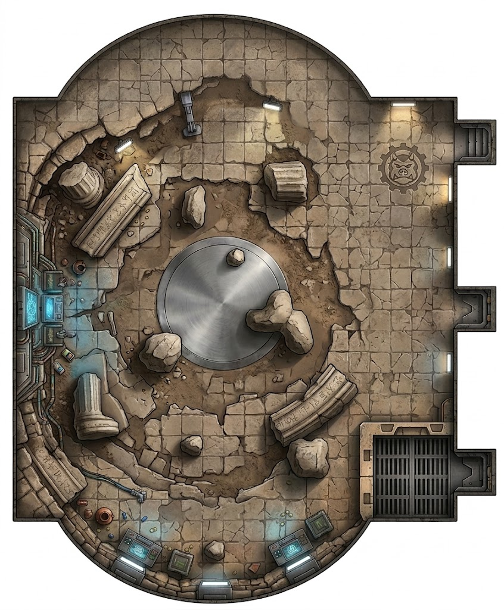

Deep inside the fortress on the far shore of Nymeve Lake, Takodana. A converted chamber — once a ceremonial hall, maybe a throne room from a previous occupant — gutted and repurposed by Varga the Hutt into a fighting arena. The walls are ancient stone, the technology bolted on afterward. Everything here serves one purpose: entertainment for a Hutt who has grown bored of almost everything else.
The pit floor is uneven — packed sand over broken flagstone. The fallen columns on the west side provide hard cover but create difficult terrain. The scattered rubble on the north side offers partial cover. The bone pit in the southwest is difficult terrain littered with sharp debris. The sand hollow in the southeast has knee-deep loose sand that slows movement but cushions falls. The central drain is slippery. Trophy stakes east of center offer minimal cover but improvised weapons. The rest of the floor is open ground with no cover — by design. Varga wants to see blood, not hiding.
The pit floor is two meters below the spectator ledge. The walls are smooth stone — climbing out requires an Athletics check at increased difficulty. The Gamorrean guards at the northeast watch post will push climbers back down. The only authorized exit is the gladiator gate on the east wall, controlled from the south control station. The cargo lift in the southeast corner can raise or lower loads from the fortress levels below — controlled from the south control station.
The central drain can vent steam — triggered from the control station or the tech alcove. Burst duration is one round, affecting everyone within short range of the drain. The overhead lights can be killed for temporary darkness (one round before backup generators kick in). Coolant pipes in the tech alcove can be ruptured for a freezing gas burst. The cargo lift shaft is four meters deep when the platform is lowered — a fall is survivable but painful. The bone pit debris cuts anyone who falls prone there. All environmental triggers require either control station access or a Tech check at the source.
Fifty-odd spectators packed onto the ledge above. They throw things — bottles, food, occasionally a weapon if they think it'll make the fight more interesting. A fighter who plays to the crowd (Charm or Deception) can shift the mood — a cheering crowd might convince Varga to show mercy, or to make the fight harder by releasing a second opponent. The crowd is a tool, not a threat. Unless you give them a reason to jump in.
Old blood baked into sand. Sweat — human and otherwise. The chemical tang of the crowd's drinks. Underneath it all, the mineral smell of ancient stone and the faint ozone of the overhead floods. When the drain vents, a burst of hot copper and wet iron.
The crowd — a wall of noise, dozens of species shouting in different languages. Varga's rumbling laugh, felt more than heard. The scrape of boots on sand. The grind of the gate mechanism. The hum of the overhead lights. Between exchanges, a brief, terrible silence where you can hear your own breathing and the drip of something from the drain grate.
Hot. The overhead floods radiate heat downward into the pit. The crowd above generates its own warmth. The stone walls hold the heat. The air is close and thick — ventilation was designed for a hall, not an arena packed with spectators. The only cool spot is near the tech alcove, where the coolant pipes radiate a faint chill.
Harsh white floods from above — no shadows on the arena floor, every movement visible. The spectator ledge is dimmer, faces half-lit from below. The gate corridor is deliberately dark — fighters emerge from shadow into blinding light, disoriented for a crucial second. The tech alcove glows faint blue from its displays. Varga's repulsor-throne has its own soft amber lighting — he watches from comfort while his gladiators sweat under the floods.